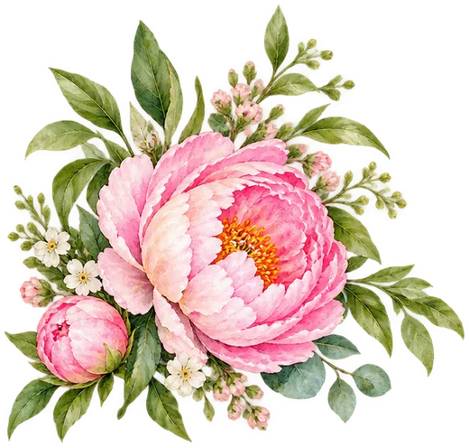
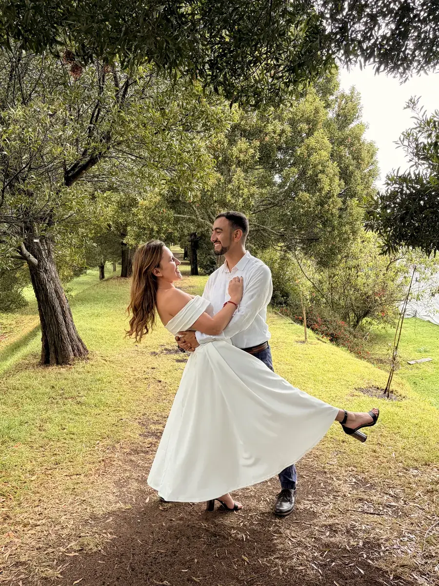
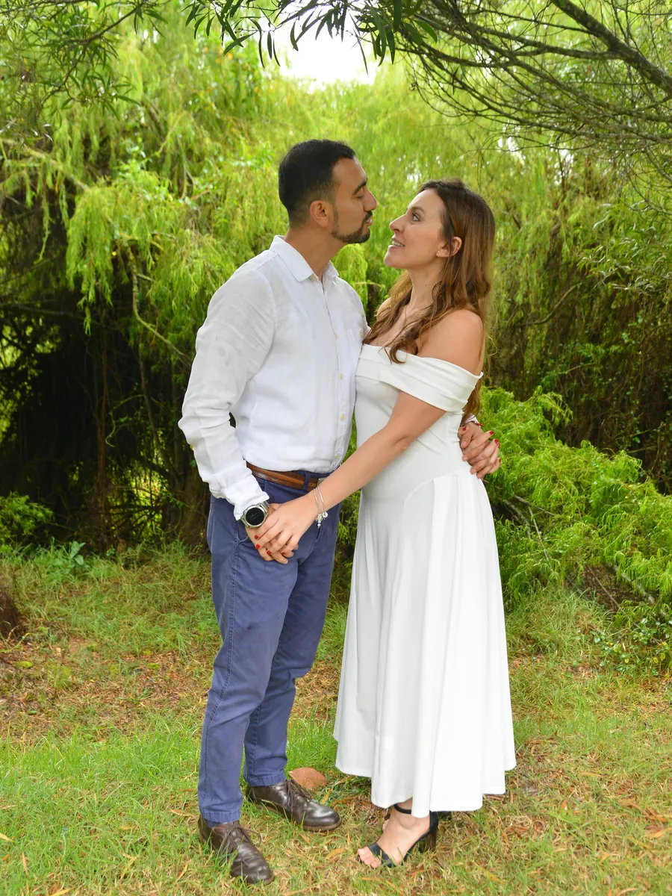
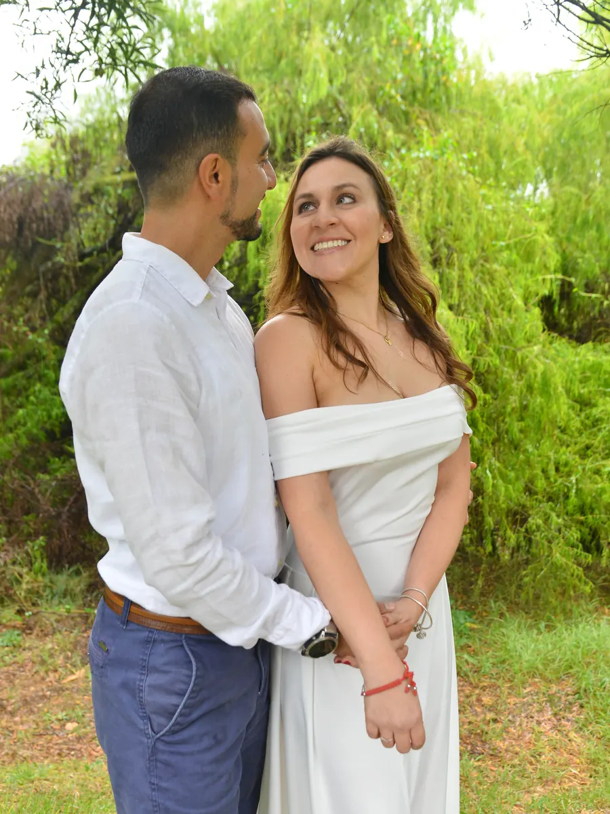
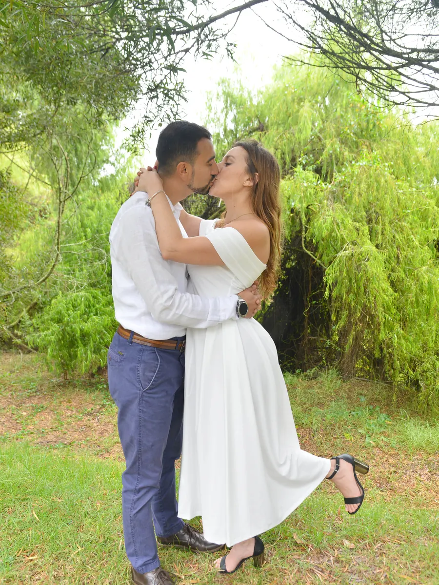
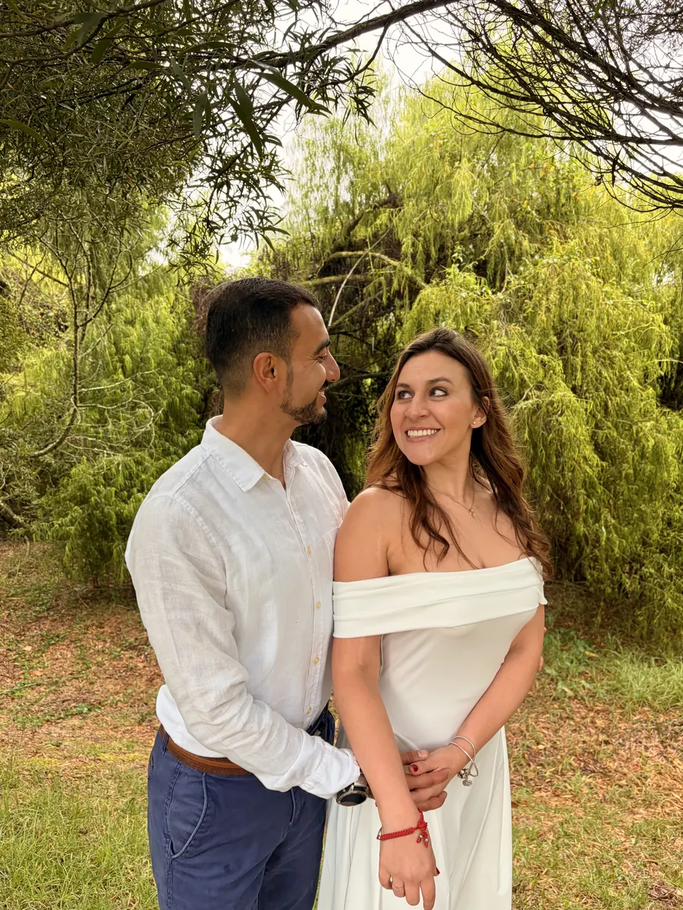
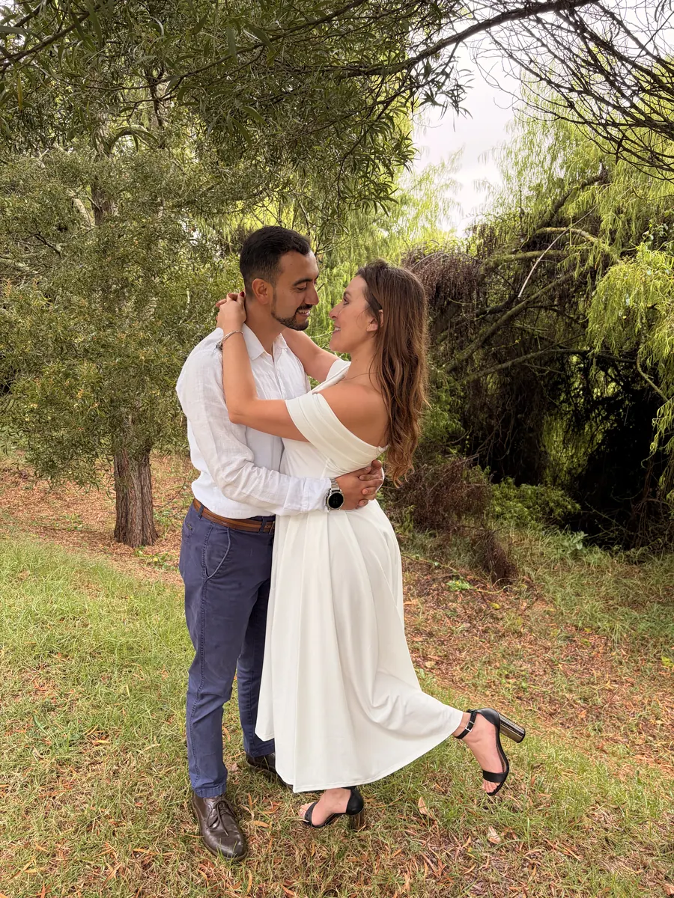
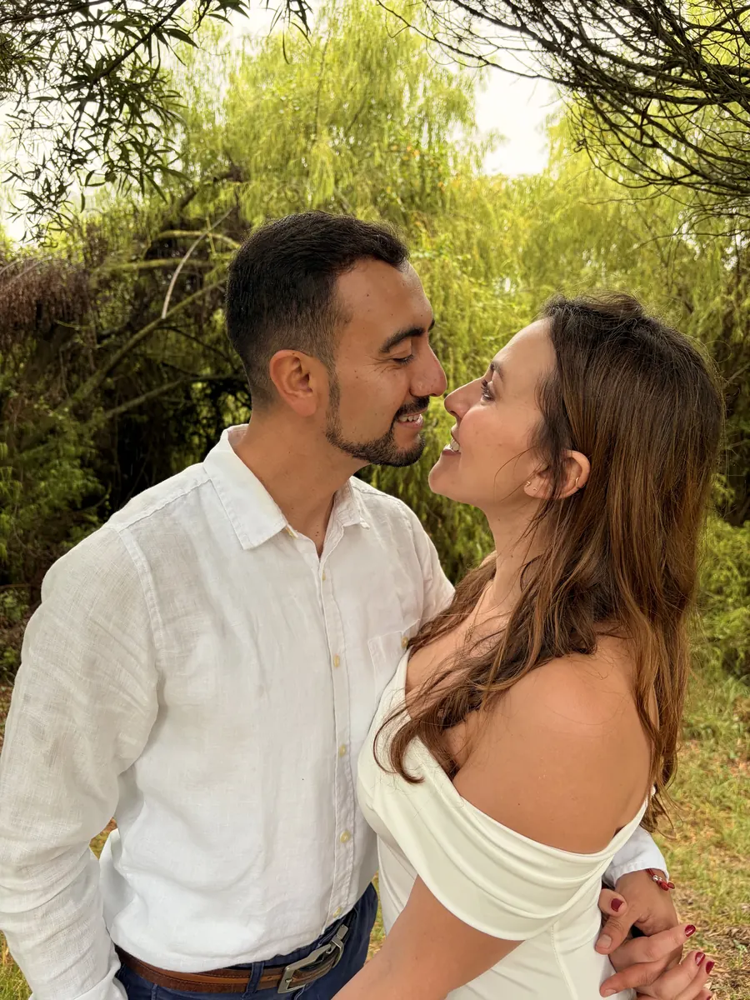

Para
Nuestros queridos invitados







Con todo nuestro cariño, queremos que nos acompañes en el inicio de esta nueva historia: una historia que nace del amor y el ejemplo de nuestras familias, y que hoy celebramos con la bendición de nuestros padres.
Padres de la novia
Jorge Mejía · Rosa Niño†quien nos acompaña desde el cielo
Padres del novio
Miguel Vargas · Carmen Velandia
Ana&Juan
30 · 01 · 2027
Hacienda La Victoria